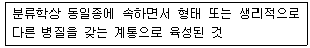

버섯종균기능사 (2009-03-29 기출문제)
1과목: 종균제조(임의구분)
1. 종균의 저장온도가 가장 낮은 버섯은?
- 양송이
- 느타리버섯
- 표고버섯
- 팽이버섯
(정답률: 95%)

2. 양송이 곡립종균 제조시 균덩이 형성 방지책과 가장 거리가 먼 것은?
- 흔들기를 자주하되 과도하게 하지 말 것
- 고온 저장을 피할 것
- 장기 저장을 피할 것
- 호밀은 박피하지 말 것
(정답률: 89%)
3. 느타리버섯 원균 증식용 배지 조제시 불필요한 것은?
- 양송이 퇴비
- 감자
- 설탕
- 한천
(정답률: 87%)
4. 느타리버섯의 원목재배에 적합한 수중으로 거리가 먼 것은?
- 낙엽송
- 버드나무
- 은사시나무
- 오리나무
(정답률: 77%)
5. 버섯 종균생산에서 배지조제(곡립배지, 톱밥배지)시 산도 조절용으로 사용하는 첨가제는?
- 황산마그네슘
- 탄산석회
- 인산염
- 아스파라긴
(정답률: 94%)
6. 활물기생 또는 반활물기생이 가능한 것은?
- 뽕나무버섯
- 양송이
- 청부채버섯
- 표고버섯
(정답률: 78%)
7. 양송이의 균사배양시 적합 조건이 아닌 것은?
- 온도는 23~25℃
- 습도는 90~95%
- 충분한 산소 공급
- 배지의 pH 8 이상
(정답률: 82%)
8. 양송이 자실체로부터 포자를 채취하여 원균을 제조하고자 한다. 다음 중 포자 채취에 가장 알맞은 것은?
- 갓이 완전히 벌어진 것을 채취한다.
- 갓이 벌어져 포자가 많이 나르는 것을 채취한다.
- 갓이 벌어지기 직전의 것을 채취한다.
- 버섯의 모양이 갖추어진 상태일 때 채취한다.
(정답률: 90%)
9. 종균배지(톱밥배지)제조시 입병용기가 1,000ml일 경우 일반적으로 배지 주입량으로 가장 적합한 것은?
- 550~650g
- 660~750g
- 760~800g
- 850~900g
(정답률: 84%)
10. 양송이균의 특성이 아닌 것은?
- 균사는 격막이 있고, 꺽쇠연결은 없다.
- 염색체는 다소 차이가 있으나 n = 9개 이다.
- 균사체를 구성하는 세포내에 다핵 상태로 균사내에서 핵융합이 일어난다.
- 대외 갓이 연결되는 부분에 생장점이 있다.
(정답률: 74%)
11. 버섯 균사를 접종(이식)할 때 주로 사용하는 기구는?
- 백금선
- 백금구
- 백금이
- 백근망
(정답률: 90%)
12. 균주보존에서 자실체 형성이나 균의 생리적 특성이 변화되는 현상을 방지하기 위한 일반적인 보존방법은?
- 계면활성 보존법
- 계대배양 보존법
- 합면배양 보존법
- 고온처리 보존법
(정답률: 91%)
13. 버섯 원균의 분리 및 배양시 반드시 필요한 기기인 것은?
- 항온기
- 냉동건조기
- 아미노산 분석기
- 초저온냉동기
(정답률: 93%)
14. 접종실(무균실)의 습도는 몇 % 이하로 유지하여야 좋은가?
- 70%
- 80%
- 90%
- 100%
(정답률: 89%)
15. 열에 민감하여 한계온도 이상의 열 처리시 변성될 가능성이 있는 비타민, 항생제 등의 성분들에 사용하는 열균법은?
- 가스멸균
- 여과멸균
- 자외선멸균
- 화염멸균
(정답률: 91%)
16. 식용버섯의 원균 보존 방법으로 적합하지 않은 것은?
- 유동 파라핀 봉임법
- 동결 건조법
- 진공 냉동 건조법
- 상온 장기 저장법
(정답률: 88%)
17. 주름버섯 목(目)으로만 이루어진 것은?
- 양송이, 느타리버섯, 목이버섯
- 영지버섯, 표고버섯, 복령버섯
- 영지버섯, 구름버섯, 표고버섯
- 느타리버섯, 표고버섯, 팽이버섯
(정답률: 87%)
18. 일반적인 버섯의 특징이 아닌 것은?
- 버섯균은 고등균류에 속하는 생물군이다.
- 버섯세포는 전형적인 세포벽으로 싸여 있다.
- 버섯은 생태계 중 유기물 생산자이다.
- 버섯의 균사체는 진핵세포로 구성되어 있다.
(정답률: 74%)
19. 주로 양송이를 재배할 때 사용되는 종균은?
- 곡립종균
- 톱밥종균
- 퇴비종균
- 종목종균
(정답률: 75%)
20. 버섯의 분류학적 위치에서 느타리버섯, 표고버섯, 양송이, 팽이버섯은 분류학상 생물계의 어디에 속하는가?
- 담자균아문
- 불안전균아문
- 자낭균아문
- 편모균아문
(정답률: 85%)
21. 표고버섯의 포자 색깔은?
- 회색
- 백색
- 흑색
- 갈색
(정답률: 89%)
22. 버섯의 돌연변이 균주를 찾기 위하여 사용하는 배지 종류로 가장 적합한 것은?
- 버섯최소배지
- 퇴비추출배지
- 하마다배지
- 맥아배지
(정답률: 78%)
23. 유성생식과정에서 두 개의 반수체 핵이 핵융합을 하여 형성하는 것은?
- 반수체
- 2핵체
- 4핵체
- 2배체
(정답률: 77%)
24. 식용이 가능한 버섯은?
- 말불버섯
- 양파광대버섯
- 화경버섯
- 애기무당버섯
(정답률: 87%)
25. 국립 종균 배지 살균시간 결정에 관계가 없는 것은?
- 보일러 재질
- 중균병의 크기
- 배지의 수분함량
- 살균기의 크기
(정답률: 76%)
26. 양송이의 주름살의 색상에 대한 설명으로 옳은 것은?
- 생육단계에 상관없이 백색이다.
- 담홍색으로부터 차차 갈색, 암갈색으로 변한다.
- 초기에는 흑색이나 후기에는 백색으로 연하게 된다.
- 초기에 백색이나 후기에 노랑색으로 된다.
(정답률: 73%)
27. 감자추출배지(PDA) 1L를 제조할 때 사용하는 감자의 무게는 약 몇 g이 가장 적당한가?
- 10
- 50
- 100
- 200
(정답률: 91%)
28. 표고버섯의 불량 종균에 대한 설명으로 틀린 것은?
- 종균 표면에 푸른색이 보이는 것
- 종균병 속에 갈색 물이 고인 것
- 종균병 속의 표면이 흰색으로 만연된 것
- 종균 표면에 붉은색을 보이는 것
(정답률: 76%)
29. 대주머니가 있는 버섯은?
- 양송이
- 광대버섯
- 느타리버섯
- 팽이버섯
(정답률: 92%)
30. 표고버섯 품종 중 톱밥재배용 품종은?
- 산림2호
- 산림4호
- 산림7호
- 산림10호
(정답률: 57%)
2과목: 버섯재배(임의구분)
31. 자실체에서 버섯균을 분리할 때 세균의 오염을 피하기 위해서 첨가하는 항생제가 아닌 것은?
- 베노밀
- 스트렘토마이신
- 크로람페니콜
- 패니실린
(정답률: 68%)
32. 표고버섯의 자실체 발육에 가장 적합한 공중 습도는?
- 15~30%
- 40~60%
- 70~90%
- 100% 이상
(정답률: 73%)
33. 느타리버섯 볏짚배지 살균시 온도계 설치 위치로 가장 바른 것은?
- 재배사내 최상단의 볏짚내부
- 재배사내 상단의 볏짚표면
- 재배사내 중간단의 볏짚내부
- 재배사내 최하단의 볏짚내부
(정답률: 77%)
34. 재배사의 바닥을 흙으로 할 때 가장 문제되는 점은?
- 온도관리
- 습도관리
- 살균 및 후발효관리
- 병해관리
(정답률: 78%)
35. 버섯 발생시 광도(조도)의 영향이 가장 적은 버섯은?
- 표고버섯
- 느타리버섯
- 양송이
- 영지버섯
(정답률: 61%)
36. 양송이 재배시 호흡에 의한 이산화탄소의 방출량이 가장 많은 생육단계는?
- 계열직전의 큰 버섯
- 중간크기의 버섯
- 어린 버섯
- 균사생장
(정답률: 73%)
37. 양송이나 느타리버섯 재해시 재배사 내에 탄산가스가 축적되는 주 원인은?
- 옥토에서 발생
- 퇴비에서 발생
- 외부공기로부터 혼입
- 농약 살포로 발생
(정답률: 87%)
38. 느타리 원목재배시 땅에 묻는 작업 중 묻는 장소의 선정으로 적합하지 않은 곳은?
- 수확이 편리한 곳
- 관수시설이 편리한 곳
- 배수가 양호한 곳
- 진흙이 많은 곳
(정답률: 90%)
39. 표고 원목재배시 분눕혀두기 작업에 대한 설명으로 틀린 것은?
- 뒤집기 작업이 필요 없다.
- 보온ㆍ보습이 잘 되게 관리한다.
- 분눕혀두기 방법은 임시눕혀두기와 같이 하거나 베갯속살기를 한다.
- 직사광선을 막아주고 광도가 2000~3000lux인 곳이 눕히는 장소로 적합하다.
(정답률: 75%)
40. 버섯 재배용 배재를 발효시킬 때 밀도가 가장 높아야 하는 미생물군은?
- 고온성, 호기성균
- 고온성, 혐기성균
- 중온성, 호기성균
- 중온성, 혐기성균
(정답률: 79%)
41. 느타리버섯 재배시 볏짚단의 야외발효에 관한 설명으로 옳은 것은?
- 고온, 혐기성 발효가 되도록 한다.
- 볏짚이 충분히 부숙되도록 발효시킨다.
- 발효가 진행될수록 볏짚더미를 크게 쌓는다.
- 볏짚더미의 상부가 60℃ 일 때 뒤집기를 한다.
(정답률: 74%)
42. 표고버섯의 불시재배시 표고 발생을 위한 골목의 살수 또는 침수시 골목의 수분함량으로 가장 적당한 것은?
- 15%
- 35%
- 50%
- 75%
(정답률: 74%)
43. 0℃ 이하에서 원균을 보존할 때 사용하는 동결보호제로 가장 적당한 것은?
- 살균수
- 유동파라핀
- 10% 글리세린
- 70% 에탄올
(정답률: 86%)
44. 우수농산물관리제도(GAP)로 버섯 병해충 방제를 할 때 가장 유의해야하는 방제 방법은?
- 생물학적 방제법
- 재배적 방제법
- 물리적 방제법
- 화학적 방제법
(정답률: 86%)
45. 양송이 종균 접종 후 실내온도를 낮게 유지하기 시작할 시기는?
- 종균재식 2일 후
- 종균재식 7일 후
- 보도 직전
- 종균재식 직후
(정답률: 67%)
46. 아래 설명하는 보기의 용어로 가장 적합한 것은?

- 균주
- 원균
- 종균
- 품종
(정답률: 78%)
47. 일반적으로 양송이의 밀 곡립 종균의 최적 수분함량은?
- 35~40%
- 45~50%
- 55~60%
- 65~70%
(정답률: 63%)
48. 느타리버섯 재배종 중 자실체 원기 유도시 저온처리가 필요 없는 것은?
- 느타리(Pieurotus ostreatus)
- 노랑느타리(Pieurotus cornucopise)
- 양송이(Agaricus bisporus)
- 큰느타리(Pieurotus eryngil)
(정답률: 65%)
49. 유태생으로 생식하는 버섯파리는?
- 시아리드
- 프리드
- 세시드
- 가스가미드
(정답률: 90%)
50. 느타리버섯 재배용 볏짚의 수분조절 방법 중 야외에서 실시할 때 가장 적합한 방법은?
- 물탱크를 이용하여 물에 담그는 방법
- 입상 후 살수하는 방법
- 1차 침지 후 살수하는 방법
- 살수 후 담그는 방법
(정답률: 74%)
51. 표고버섯 원목에서 주홉꼬리버섯이 발생되는 주 원인은?
- 원목에 수분이 적고 직사광선을 받았을 때
- 원목에 수분이 많고 그늘진 곳에서 재배시
- 표고재배시 지하수가 불량할 때
- 골목장에 잡초가 무성할 때
(정답률: 82%)
52. 팽이버섯 재배시 온도가 가장 높게 유지되어야 하는 곳은?
- 배지 배양실
- 억제실
- 발아실
- 생육실
(정답률: 57%)
53. 버섯재배사 내의 이산화탄소 농도가 5000ppm 이면 % 농도로는 얼마인가?
- 0.0⑤
- 0.⑤
- 0.5
- 5
(정답률: 69%)
54. 양송이 곡립종균을 5℃에서 저장시 수량에 지장이 없는 허용한도 저장기간으로 가장 적합한 것은?
- 30일
- 60일
- 80일
- 90일
(정답률: 84%)
55. 푸른곰팡이병의 발생 원인으로 틀린 것은?
- 재배사의 온도가 높을 때
- 복토에 유기물이 많을 때
- 복토가 알칼리성일 때
- 후방효가 부적당할 때
(정답률: 68%)
56. 양송이 및 느타리버섯 재배시 균상의 단과 단 사이의 간격으로 가장 알맞은 것은?
- 10cm
- 30cm
- 60cm
- 90cm
(정답률: 84%)
57. 표고버섯 종균 증식과정의 하나로 보기 어려운 것은?
- 원균분양
- 원균증식
- 접종원 제조
- 품질검사
(정답률: 79%)
58. 느타리버섯 병재배 시설에 필요 없는 것은?
- 배양살
- 배지냉각실
- 생육실
- 억제실
(정답률: 79%)
59. 톱밥배지의 상압 살균 온도로 가장 적합한 것은?
- 약 80℃
- 약 100℃
- 약 121℃
- 약 150℃
(정답률: 68%)
60. 종균배양실의 환경 조건에 대하나 설명으로 부적합한 것은?
- 환기를 실시하여 신선한 공기를 유지한다.
- 실내습도를 70% 이하로 낮게 하여 잡균 발생을 줄인다.
- 항상 일정한 온도를 유지하여 응결수 형성을 억제한다.
- 100lux 정도의 밝기로 유지하여 자실체 원기 형성을 유도한다.
(정답률: 67%)